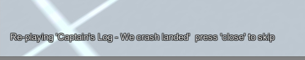
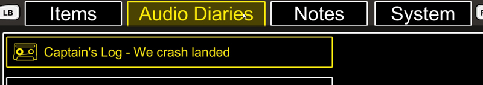

First Person Exploration Kit: Creating an Audio Diary
Audio Diaries are interactable objects in the game world that play an audio file and optionally show a title on screen. They can also be "collected" into the player's inventory and listened to again later.
Audio Diary
- Drag any 3D object into the scene (e.g. model of a tape recorder).
- Ensure the Collider is either correctly scaled and rotated (e.g. if using imported Mesh Collider), or remove it completely.
- If Collider was removed in step 2, add a new collider (e.g. Box Collider).
- Size the Collider (either imported, or added in step 3 above - e.g. Box Collider) to fit for the object you're making, with consideration to reticle aiming (e.g. if tiny scrap of paper, make collider big enough to get reticle over easily for the player).
- Add FPEInteractableAudioDiaryScript to your object and set the following variables to suit your object:
- Interaction String: For example "Woah, what happened to that ship?"
- Audio Diary Title: For example, "Captain's Log - We crash landed"
- Audio Diary Clip: The audio clip for the diary. See audioDiaryDemo.ogg in FirstPersonExplorationKit/Resources/AudioDiaryAudioClips folder for an example.
- During Playback Interaction String (Optional): For example, when the diary is playing, the string would read "It's playing..."
- Post Playback Interaction String (Optional): For example, once the diary is played, the string would read "That's the captain's ship that crash landed"
- Automatic Playback: Set to true if the diary should start playing as soon as the player looks at it. Set to false if you want to require the player press the interact button to start playback
- Add Entry To Inventory: Set to true to "collect" this audio diary into the ivnentory, which can be played back again later from the inventory menu.
- Show Diary Title: Set to true to show a title on screen when the diary is playing.
- Run the scene, and move the reticle over the new Audio Diary to trigger play back.
- To ensure the Audio Diary can be saved and loaded, ensure that the Audio Clip selected is placed inside a Resources folder, in a sub-folder called "AudioDiaryAudioClips"
Depending on the configuration options, an Audio Diary sound clip will play, and:
The title of the diary will be displayed,

and it can also be added to inventory screen under the Audio Diaries tab, and included in saved game data. To listen to the diary again, open the Audio Diaries tab in the inventory screen and click on the title of interest:
